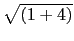

suivant: Faire une hypothèse suppl'ementaire
monter: Les variables
précédent: Copier sans l'évaluer le
Table des matières
Index
Faire une hypothèse sur une variable : assume supposons
assume ou supposons permet de faire des hypothèses sur
une variable.
assume ou supposons a comme argument un nom de variable suivi d'une
égalité ou d'une inégalité représentant l'hypothèse faite ou bien
un nom de variable suivi d'une virgule et de son type.
On peut mettre plusieurs hypothèses à condition de les relier par and
ou or selon ce que l'on veut faire ! Toutefois, il faut utiliser
additionally comme deuxième argument de assume pour spécifier
le type de la variable et une plage de valeurs pour cette variable.
assume renvoie le nom de la variable sur laquelle on a fait les
hypothèses ou le type de cette variable.
Attention Si on fait une autre hypothèse avec assume, l'ancienne
hypothèse est effacée : si vous voulez rajoutez une nouvelle hypothèse il
faut utiliser la commande additionally ou mettre additionally
comme deuxième argument de assume.
Remarque
Si l'argument de assume est juste un nom de variable
assume est alors synonyme de about.
On tape
assume(a=2)
Ou on tape
supposons(a=2)
Ou on tape
assume(a=2)
Ou on tape
supposons(a:=2)
Ou on tape directement :
supposons(a=[2,-5,5,0.1])
On obtient :
un curseur permettant de faire varier a
Lorsque l'on fait varier a la commande assume(a=2) se transforme en
supposons(a=[2.1,-5.0,5.0,0.1]) et les niveaux qui suivent sont
évalués. Si il n'y a rien sur le niveau suivant on aura undef en
réponse.
Cela signifie que a peut varier entre -5 et 5 avec un pas
de 0.1 et que a vaut 2.1.
Si sur les deux niveaux suivants on a
evalf(a+2) et evalf(a+3)
les réponses évolueront selon la position du curseur (curseur en 2.1,
on aura 4.1 et 5.1 puis curseur en 2.2, on aura 4.2 et
5.2). Mais si sur les deux niveaux suivants on a a+2 et a+3,
les réponses seront toujours a+2 et a+3.
On tape pour supposer que la variable formelle a est positive :
assume(a>0)
On obtient :
a
On tape :
assume(a)
On obtient :
assume[DOM_FLOAT,[line[0,+(infinity)]],[0]]
cela signifie que a est une variable réelle appartenant à
[0; +  et que 0 est exclu (on a le domaine, l'intervalle et les valeurs
exclues).
et que 0 est exclu (on a le domaine, l'intervalle et les valeurs
exclues).
On tape pour supposer que la variable formelle a est dans
[2;4[ ]6;[ :
assume((a>=2 and a<4) or a>6)
On obtient :
a
On tape :
assume(a)
On obtient :
assume[DOM_FLOAT,[[2,4],[6,+(infinity)]],[4,6]]
cela signifie que a est une variable réelle appartenant à
[2;4] [6;[ et que 4 et 6 sont exclus (on a le domaine, l'intervalle
et les valeurs exclues).
On tape :
abs(1-a)
On obtient :
-1+a
On tape pour dire que b est un entier :
assume(b,integer)
On obtient :
DOM_INT
On tape :
assume(b)
On obtient :
[DOM_INT]
On tape pour dire que b est un entier supérieur strictement à 5 :
assume(b,integer);
assume(b>5,additionally)
On obtient :
DOM_INT
puis
b
On tape :
assume(b)
On obtient :
[DOM_INT]
Remarque
Lorsque assume a comme argument une seule égalité et que la commande
est tapée dans une ligne d'entrée d'un écran de géométrie, cela met
un petit curseur en haut et à droite de cet écran. Le nom du paramètre
est noté à droite du curseur. Ce curseur permet de changer la valeur du
paramètre et cette valeur sera notée à gauche du curseur.
On tape par exemple :
assume(a=[2,-10,10,0.1])
Cela signifie que tous les calculs seront faits avec a quelconque, à
condition que les points aient des coordonnèes exactes, mais que la figure
sera tracée avec a=2 et que l'on pourra faire varier cette figure avec
le petit curseur en fonction de a de -10 à +10, avec un pas
de 0.1. Si on met assume(a=[2,-5,5), a varie de -5 à
+5 avec un pas de (5-(-5))/100), et si on met assume(a=2),
a varie de WX- à WX+ et le pas est ((WX+)-(WX-))/100.
Attention En géométrie il faut donc travailler avec des coordonnèes
exactes par exemple :
A:=point(i);assume(b:=2); B:=point(b);
puis on tape :
longueur(A,B);
On obtient :
sqrt((-b)^2+1)
Mais :
A:=point(0.0+i);assume(b:=2); B:=point(b);
puis on tape :
longueur(A,B);
On obtient la valeur approchée de
 :
2.2360679775
Attention à la différence entre assume et element
Si b:=element(0..3,1,0.1) est tapé dans une ligne d'entrée d'un
écran de géométrie, cela met aussi un petit curseur en haut et à droite
de cet écran avec b=1 et on pourra faire
varier b avec le petit curseur de 0 à 3 avec un pas
de 0.1. Mais la variable b n'est pas formelle !
On tape
a;b
On obtient :
(a,1)
suivant: Faire une hypothèse suppl'ementaire
monter: Les variables
précédent: Copier sans l'évaluer le
Table des matières
Index
Documentation de giac écrite par Renée De Graeve